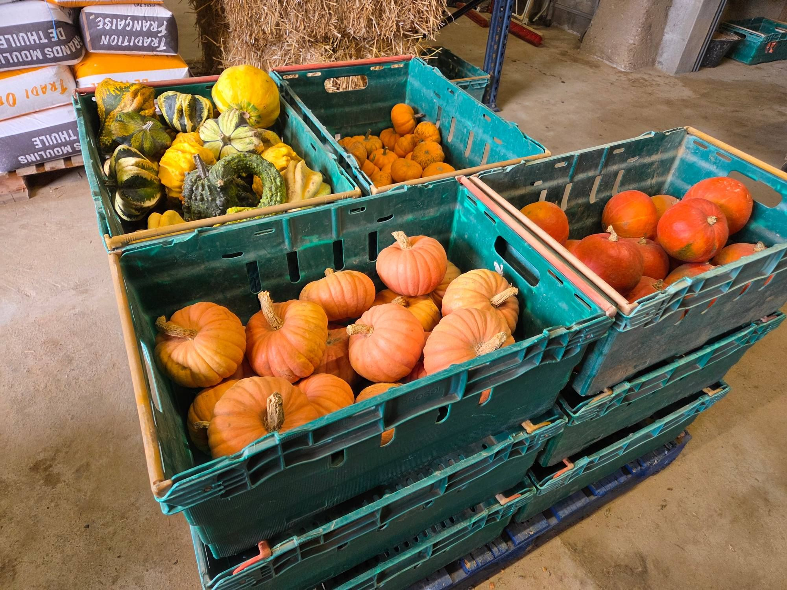
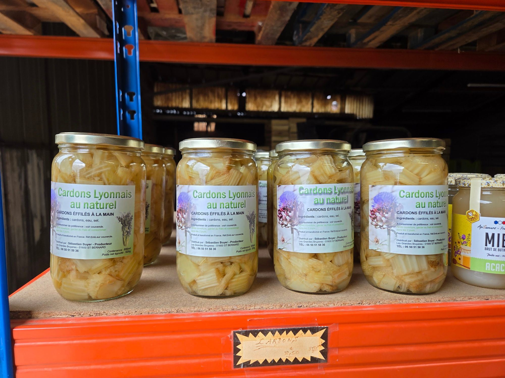
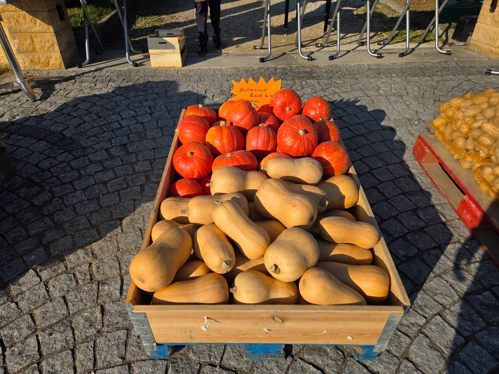
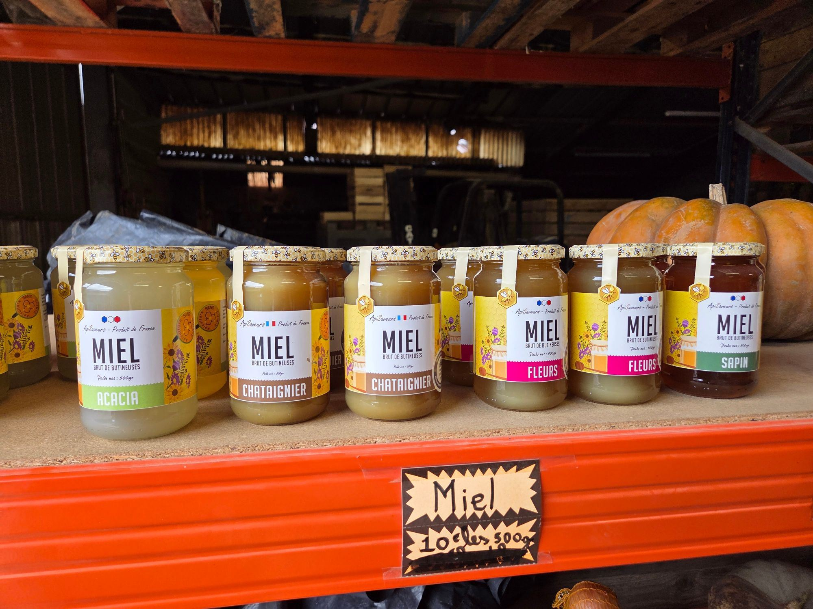

01
Fraîcheur
Les légumes vont du champ à l'étal sans long transport ni stockage en entrepôt. Vous les achetez au plus près de la récolte.
La ferme · Saint-Bernard (Ain)
Un maraîcher local, un étal au bord de la route et des légumes de saison vendus en direct, sans intermédiaire.
Qui sommes-nous ?
Sébastien Boyer est maraîcher à Saint-Bernard, dans l'Ain, au bord de la Saône, entre Trévoux et Anse. Ici, on cultive des fruits et légumes et on les vend directement à la ferme : vous achetez au producteur, sans passer par un magasin.
Pas de grande surface ni de vitrine : un étal en bord de route, un hangar, des caisses en bois bien remplies et des pancartes écrites à la main avec les prix du moment. Selon la saison, on y trouve des pommes de terre, des oignons, des courges de toutes les formes, des carottes rouges, des cardons…
L'idée est simple : des produits frais, de saison, cultivés près de chez vous.

Pourquoi acheter à la ferme ?
Acheter directement au producteur, c'est aussi savoir d'où viennent vos légumes.
Les légumes vont du champ à l'étal sans long transport ni stockage en entrepôt. Vous les achetez au plus près de la récolte.
Pas d'intermédiaire entre le producteur et vous : vous achetez sur place, vous pouvez poser vos questions et le prix revient à celui qui cultive.
On vend ce que la saison donne : les étals changent au fil de l'année. Le calendrier des saisons vous aide à savoir quoi trouver et quand.


La spécialité
Le cardon est un légume emblématique de la région lyonnaise, incontournable des tables de fin d'année.
Ses côtes sont effilées à la main, un travail patient qui les débarrasse de leurs fils. En saison, à l'automne et en hiver, on les trouve frais sur l'étal.
Pour en profiter toute l'année, ils sont aussi proposés en bocaux, au naturel : des cardons, de l'eau et du sel, rien d'autre. Prêts à cuisiner en gratin ou à la moelle.
En images
Quelques photos prises à la ferme, au fil des saisons.






Ouvert à partir de 8h. Un petit coup de fil avant de venir, c'est plus sûr.